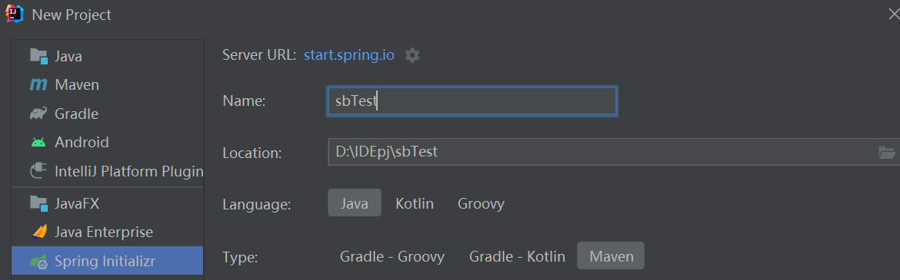

Spring初体验
Spring 初体验：
俗话说“没学过spring等于没学过Java”，spring在Java领域的地位可见一斑。在Java中，Spring是一个开源的应用程序框架，用于构建企业级Java应用程序。它提供了一个轻量级的、非侵入性的编程和配置模型，用于开发灵活、可扩展的应用程序。笔者Java水平很低，但由于毕设的原因写了好久的Java代码，顺便学习一下spring吧。
spring boot项目创建：
个人认为，学习Java最好的工具就是IDEA，颜值高功能齐全，除了配置要求高容易卡没缺点，当然eclipse也有轻量级的优势吧。IDEA的专业版可以用学生认证免费获得。
直接用IDEA的spring initializr来创建一个新的spring项目。
初学者的话，只选一个spring web也不是不行啦。这里的spring boot最新版本最老只支持JDK 17，后续编译运行会有
错误: 无效的源发行版：17
因此如果java版本老的可以选老的spring boot版本。解析maven依赖的时间还挺久的，如果实在太慢可以参考网络上的教程。右键pom.xml，选择maven，新建settings.xml，然后添加镜像。

创建以后，自带一个有主函数的java文件：

私以为，学习web框架中运行一个简单的web服务器等价于学习编程语言输出hello world。创建一个控制器类，用于处理HTTP请求并返回响应。你可以使用@Controller或@RestController注解进行标记，并定义相应的请求处理方法。

运行main方法，默认端口为8080，访问http://localhost:8080/hello，可以看到返回的“你好世界”。